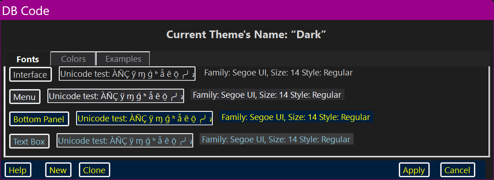
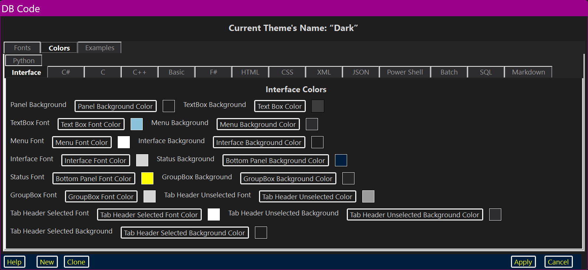
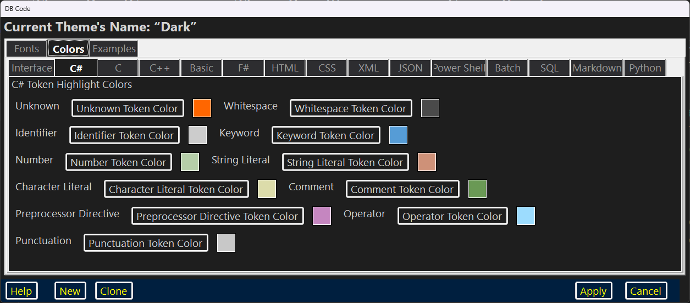
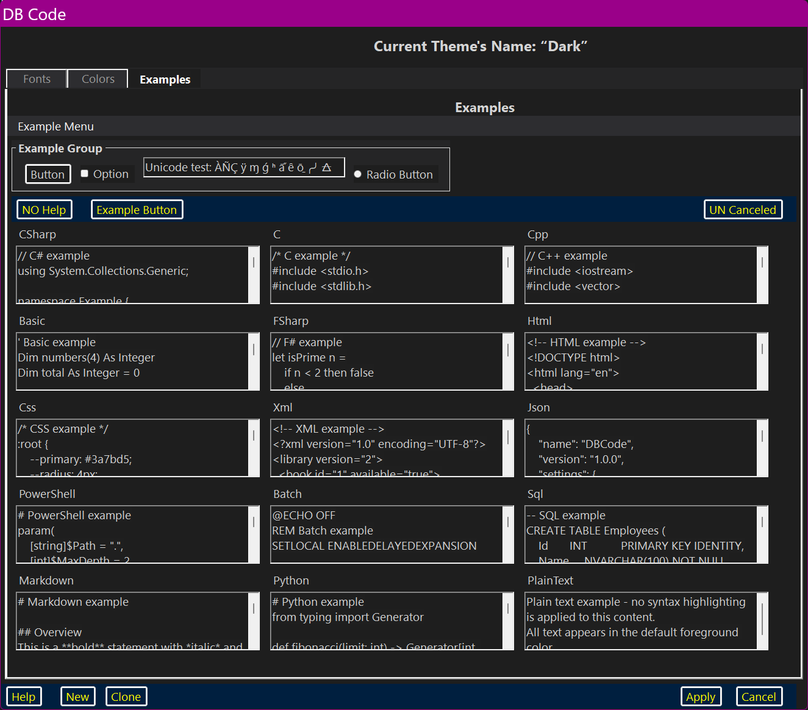

DBCode’s Theme Designer/Editor dialog is used to either edit an existing Theme or design an entirely new Theme.

The Fonts Page
The Fonts page has four clusters: “Interface”; “Menu”; “Bottom Panel” and “Text Box”. Each cluster consists of a Button which brings up a Font Picker, a TextBox with an example of the Font and a dynamic Label specifying the Font Family, Size and Style.
The “Interface” Font is used for Controls (Buttons, Labels etc.).
The “Menu” Font is used for Menus and Context Menus.
The Bottom Panel Font is used for the Bottom Panels which every dialog and the main GUI has.
The Text Box Font is that which is used in the main GUI’s RichTextBox. Currently, DBCode only transfers plain text.
The Colors Page
The Interface Colors Page

[TODO: Finish this]
The Language Syntax Colors Pages

The Colors page itself has a TabControl with fifteen pages of its own: “Interface”; “C”; “C++”; “C#”; “Basic”; “F#”; “HTML”; “CSS”; “XML”; “JSON”; “Power Shell” (PowerShell); “Batch”; “SQL”; “Markdown” and “Python”.
The Interface page controls how the interface (Text, Buttons and other controls) will be themed color–wise. There are fifteen settings: “Panel Background Color”; “Text Box Color”; “Text Box Font Color”; “Menu Background Color”; “Menu Font Color”; “Interface Background Color”; “Interface Font Color”; “Bottom Panel Background Color”; “Bottom Panel Font Color”; “GroupBox Background Color”; “GroupBox Font Color”; “Tab Header Unselected Color”; “Tab Header Selected Font Color”; “Tab Header Unselected Background Color”; “Tab Header Selected Background Color”.
The C, C++ And C# Languages Syntax Colors Page
C, C++ and C# all have exactly the same tokens but their colors may differ.
The Unknown token color is used to color any character that does not match any other token category — for example, unrecognized symbols or encoding artifacts.
The Whitespace token color is used to color spaces, tabs, and line breaks between tokens.
The Identifier token color is used to color variable names, method names, type names, and all other user-defined symbols.
The Keyword token color is used to color reserved language keywords such as int, class, if, return, and static.
The Number token color is used to color integer, floating-point, and hexadecimal numeric literals.
The String Literal token color is used to color text enclosed in double quotes ("...").
The Character Literal token color is used to color single-character literals enclosed in single quotes ('a').
The Comment token color is used to color // single-line comments and /* ... */ block comments.
The Preprocessor Directive token color is used to color # directives such as #include, #define, #if, and #pragma.
The Operator token color is used to color arithmetic, bitwise, logical, comparison, and assignment operators.
The Punctuation token color is used to color grouping and separator characters: parentheses, braces, brackets, commas, semicolons, and periods.
The Basic Language Syntax Colors Page
The Unknown token color is used to color any character that does not match any other token category.
The Whitespace token color is used to color spaces, tabs, and line breaks.
The Identifier token color is used to color variable names, Sub names, Function names, and other user-defined symbols.
The Keyword token color is used to color reserved Basic keywords such as Dim, For, Next, If, Then, Sub, and Function.
The Number token color is used to color integer and floating-point numeric literals.
The String Literal token color is used to color text enclosed in double quotes ("...").
The Character Literal token color is not used in Basic.
The Comment token color is used to color ’ single-line comments and REM statements.
The Preprocessor Directive token color is not used in Basic.
The Operator token color is used to color arithmetic, comparison, and logical operators.
The Punctuation token color is used to color parentheses, commas, periods, and other separator characters.
The F# Language Syntax Colors Page
The Unknown token color is used to color any character that does not match any other token category.
The Whitespace token color is used to color spaces, tabs, and line breaks.
The Identifier token color is used to color value bindings, function names, type names, and module names.
The Keyword token color is used to color reserved F# keywords such as let, match, with, type, module, open, and fun.
The Number token color is used to color integer, floating-point, and other numeric literals.
The String Literal token color is used to color text enclosed in double quotes ("...").
The Character Literal token color is used to color single-character literals enclosed in single quotes ('a').
The Comment token color is used to color // single-line comments and (* ... *) block comments.
The Preprocessor Directive token color is not used in F#.
The Operator token color is used to color arithmetic, comparison, pipeline (|>), and function composition (>>) operators.
The Punctuation token color is used to color parentheses, brackets, commas, semicolons, and periods.
The HTML Language Syntax Colors Page
The Unknown token color is used to color any character that does not match any other token category.
The Whitespace token color is used to color spaces, tabs, and line breaks.
The Identifier token color is used to color tag names, attribute names, and other word-like tokens.
The Keyword token color is reserved for recognized HTML element and attribute keywords; not currently active as no keywords are defined.
The Number token color is used to color numeric attribute values.
The String Literal token color is used to color quoted attribute values enclosed in double quotes ("...").
The Character Literal token color is not used in HTML.
The Comment token color is used to color <!-- ... --> HTML comments.
The Preprocessor Directive token color is not used in HTML.
The Operator token color is used to color tag delimiters (<, >, /) and the attribute assignment operator (=).
The Punctuation token color is used to color parentheses, brackets, commas, and other separator characters.
The CSS Language Syntax Colors Page
The Unknown token color is used to color any character that does not match any other token category.
The Whitespace token color is used to color spaces, tabs, and line breaks.
The Identifier token color is used to color selector names, property names, and unquoted value identifiers such as color names.
The Keyword token color is reserved for recognized CSS property names and keyword values; not currently active as no keywords are defined.
The Number token color is used to color numeric values such as the numeric portion of lengths and percentages.
The String Literal token color is used to color quoted strings, such as font family names enclosed in double quotes.
The Character Literal token color is not used in CSS.
The Comment token color is used to color /* ... */ block comments.
The Preprocessor Directive token color is not used in CSS.
The Operator token color is used to color the property-value colon (:) and comparison operators in media queries.
The Punctuation token color is used to color curly braces, parentheses, commas, and semicolons.
The XML Language Syntax Colors Page
The Unknown token color is used to color any character that does not match any other token category.
The Whitespace token color is used to color spaces, tabs, and line breaks.
The Identifier token color is used to color element names, attribute names, and namespace prefixes.
The Keyword token color is reserved for recognized XML element and attribute names; not currently active as no keywords are defined.
The Number token color is used to color numeric attribute values.
The String Literal token color is used to color quoted attribute values enclosed in double quotes ("...").
The Character Literal token color is not used in XML.
The Comment token color is used to color <!-- ... --> XML comments.
The Preprocessor Directive token color is used to color XML processing instructions (<?...?>), including the XML declaration (<?xml version="1.0"?>).
The Operator token color is used to color tag delimiters (<, >, /) and the attribute assignment operator (=).
The Punctuation token color is used to color parentheses, brackets, and other separator characters.
The JSON Language Syntax Colors Page
The Unknown token color is used to color any character that does not match any other token category.
The Whitespace token color is used to color spaces, tabs, and line breaks.
The Identifier token color is used to color bare word tokens not recognized as keywords; not normally present in well-formed JSON.
The Keyword token color is used to color the JSON literal values true, false, and null.
The Number token color is used to color numeric values.
The String Literal token color is used to color both property names and string values, all enclosed in double quotes.
The Character Literal token color is not used in JSON.
The Comment token color is not used in JSON, which has no comment syntax.
The Preprocessor Directive token color is not used in JSON.
The Operator token color is used to color the property-value colon (:).
The Punctuation token color is used to color curly braces, square brackets, and commas.
The PowerShell Language Syntax Colors Page
The Unknown token color is used to color any character that does not match any other token category.
The Whitespace token color is used to color spaces, tabs, and line breaks.
The Identifier token color is used to color $variable names, cmdlet names, parameter names, and other user-defined or built-in symbols.
The Keyword token color is used to color reserved Power Shell keywords such as if, foreach, function, param, try, and switch.
The Number token color is used to color integer and floating-point numeric literals.
The String Literal token color is used to color text enclosed in double or single quotes.
The Character Literal token color is not used in Power Shell.
The Comment token color is used to color # single-line comments.
The Preprocessor Directive token color is not used in Power Shell.
The Operator token color is used to color arithmetic, comparison, and assignment operators.
The Punctuation token color is used to color parentheses, braces, brackets, commas, and semicolons.
The Batch (Command Prompt) Language Syntax Colors Page
The Unknown token color is used to color any character that does not match any other token category.
The Whitespace token color is used to color spaces, tabs, and line breaks.
The Identifier token color is used to color %VARIABLE% environment variable references and other symbol names.
The Keyword token color is used to color Batch commands and keywords such as ECHO, SET, IF, FOR, GOTO, CALL, and EXIT.
The Number token color is used to color numeric literals.
The String Literal token color is used to color text enclosed in double quotes ("...").
The Character Literal token color is not used in Batch.
The Comment token color is used to color REM statements and :: comment lines.
The Preprocessor Directive token color is not used in Batch.
The Operator token color is used to color comparison and redirection operators (==, >, >>, |, &).
The Punctuation token color is used to color parentheses, commas, and semicolons.
The SQL Language Syntax Colors Page
The Unknown token color is used to color any character that does not match any other token category.
The Whitespace token color is used to color spaces, tabs, and line breaks.
The Identifier token color is used to color table names, column names, alias names, and other database object names.
The Keyword token color is used to color reserved SQL keywords such as SELECT, FROM, WHERE, JOIN, INSERT, UPDATE, DELETE, and CREATE.
The Number token color is used to color integer and decimal numeric literals.
The String Literal token color is used to color text enclosed in single quotes (’...’).
The Character Literal token color is not used in SQL.
The Comment token color is used to color -- single-line comments and /* ... */ block comments.
The Preprocessor Directive token color is not used in SQL.
The Operator token color is used to color arithmetic, comparison, and logical operators.
The Punctuation token color is used to color parentheses, commas, periods (schema.table.column notation), and semicolons.
The Markdown Language Syntax Colors Page
The Unknown token color is not produced by the Markdown tokenizer.
The Whitespace token color is used to color blank and whitespace-only lines.
The Identifier token color is used to color ordinary paragraph and body text.
The Keyword token color is used to color headings (lines beginning with #), bold spans (**...**), and italic spans (*...*).
The Number token color is not produced by the Markdown tokenizer.
The String Literal token color is used to color hyperlinks in [text](url) syntax.
The Character Literal token color is not used in Markdown.
The Comment token color is used to color blockquote lines beginning with >.
The Preprocessor Directive token color is used to color code fences (```) and inline code spans (`...`).
The Operator token color is used to color unordered list markers (- and *) and ordered list markers (1., 2., etc.).
The Punctuation token color is not produced by the Markdown tokenizer.
The Python Language Syntax Colors Page
The Unknown token color is used to color any character that does not match any other token category.
The Whitespace token color is used to color spaces, tabs, and line breaks, including significant indentation.
The Identifier token color is used to color variable names, function names, class names, and other user-defined symbols.
The Keyword token color is used to color reserved Python keywords such as def, class, if, for, while, import, return, and with.
The Number token color is used to color integer, floating-point, and complex numeric literals.
The String Literal token color is used to color text in single quotes ('...'), double quotes ("..."), and triple-quoted strings ("""...""").
The Character Literal token color is not used in Python; single-character strings use the String Literal token.
The Comment token color is used to color # single-line comments.
The Preprocessor Directive token color is not used in Python.
The Operator token color is used to color arithmetic, bitwise, logical, comparison, and assignment operators.
The Punctuation token color is used to color parentheses, brackets, braces, commas, colons, and semicolons.
The Examples Page

The Examples page has numerous examples depicting how the Theme will look as applied to the various themable things. it has examples for: a menu, with top level– and sub–item; it has a Panel which contains a GroupBox, which itself contains a Button, a CheckBox, a TextBox and a RadioButton; it has a simulated Bottom Panel and it has RichTextBoxes to demonstrate all of the various syntax highlightings.
The Bottom Panel
The “Bottom Panel” has five Buttons: “Help”; “New”; “Clone”; “Apply” and “Cancel”.
The “Help” Button brings up this HTML document in the user’s preferred browser.
The “New” Button creates a new unnamed Theme which has all default values.
The “Clone” Button creates a new unnamed Theme which is an identical clone of the current Theme.
The “Apply” Button immediately closes the dialog making all changes to the Theme and applying the new/edited theme.
The “Cancel” Button immediately closes the dialog without making any changes.